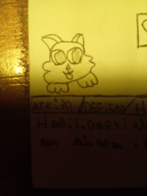

Derik
Hp:1000
Speed:andar:7/correr:15.5
Dano 15
Ability's
I am a ghost
Fica invisivel e consegue voar/7 segundos
acabar quando tem acaba ou usa qualquer ataque
Airbot
ele lançar uma bola de espinhos que tem um fraco ataque teliguiado
minions
invocar dead kapi and ribaru
Who is this miimon?/Quando falta 1 minuto ou last man standing
ele fica mais rapido andar:9 correr:18